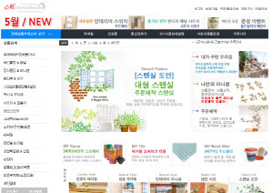
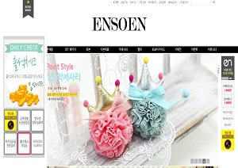
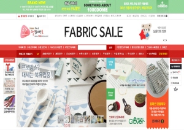
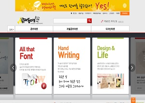
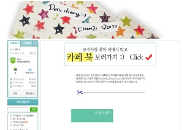

|  | 마이드림하우스 홈페이지
목재, 페인트, 스텐실, 벽지, 바닥재 등과
이미지 출처: 마이드림하우스 홈페이지. |
|  | 엔소엔 홈페이지
리본과 리본의 기본 재료를 주로 팔고 있습니다.
이미지 출처: 엔소엔 홈페이지. |
|  | 천도매몰 홈페이지
주로 패브릭을 파는 홈페이지입니다.
이미지 출처: 천도매몰 홈페이지. |
|  | 문자동맹 홈페이지
폰트를 팔고 있는 홈페이지입니다.
이미지 출처: 문자동맹 홈페이지. |
|  | 다이어리 꾸미기 네이버 카페
꾸미기를 좋아하는 분들은 한 번쯤 들어 봤을 법한 카페라고 생각합니다.
이미지 출처: 다이어리 꾸미기 네이버 카페. |